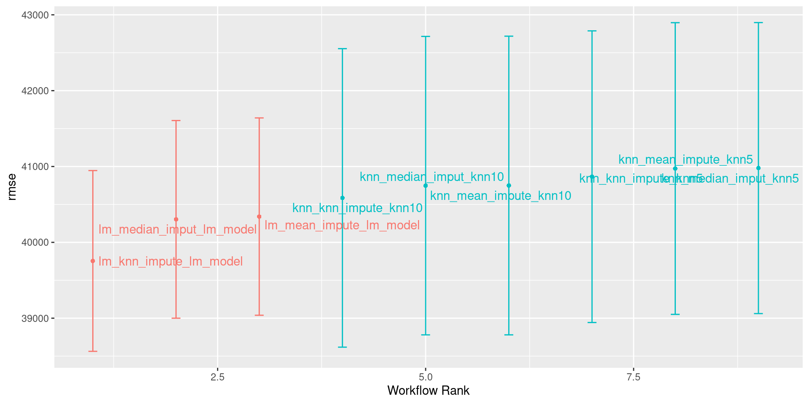
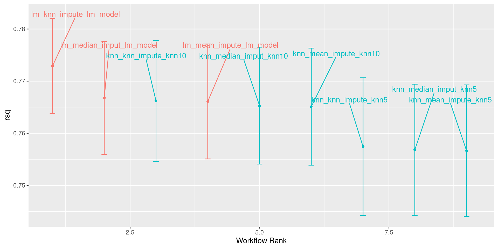

MATH 427: Workflow Sets and Feature Selection
Eric Friedlander
Computational Set-Up
Workflow Sets in R
Data: Different Ames Housing Prices
Goal: Predict Sale_Price.
Rows: 881
Columns: 20
$ Sale_Price <int> 244000, 213500, 185000, 394432, 190000, 149000, 149900, …
$ Gr_Liv_Area <int> 2110, 1338, 1187, 1856, 1844, NA, NA, 1069, 1940, 1544, …
$ Garage_Type <fct> Attchd, Attchd, Attchd, Attchd, Attchd, Attchd, Attchd, …
$ Garage_Cars <dbl> 2, 2, 2, 3, 2, 2, 2, 2, 3, 3, 2, 3, 3, 2, 2, 2, 3, 2, 2,…
$ Garage_Area <dbl> 522, 582, 420, 834, 546, 480, 500, 440, 606, 868, 532, 7…
$ Street <fct> Pave, Pave, Pave, Pave, Pave, Pave, Pave, Pave, Pave, Pa…
$ Utilities <fct> AllPub, AllPub, AllPub, AllPub, AllPub, AllPub, AllPub, …
$ Pool_Area <int> 0, 0, 0, 0, 0, 0, 0, 0, 0, 0, 0, 0, 0, 0, 0, 0, 0, 0, 0,…
$ Neighborhood <fct> North_Ames, Stone_Brook, Gilbert, Stone_Brook, Northwest…
$ Screen_Porch <int> 0, 0, 0, 0, 0, 0, 0, 165, 0, 0, 0, 0, 0, 0, 0, 0, 0, 0, …
$ Overall_Qual <fct> Good, Very_Good, Above_Average, Excellent, Above_Average…
$ Lot_Area <int> 11160, 4920, 7980, 11394, 11751, 11241, 12537, 4043, 101…
$ Lot_Frontage <dbl> 93, 41, 0, 88, 105, 0, 0, 53, 83, 94, 95, 90, 105, 61, 6…
$ MS_SubClass <fct> One_Story_1946_and_Newer_All_Styles, One_Story_PUD_1946_…
$ Misc_Val <int> 0, 0, 500, 0, 0, 700, 0, 0, 0, 0, 0, 0, 0, 0, 0, 0, 0, 0…
$ Open_Porch_SF <int> 0, 0, 21, 0, 122, 0, 0, 55, 95, 35, 70, 74, 130, 82, 48,…
$ TotRms_AbvGrd <int> 8, 6, 6, 8, 7, 5, 6, 4, 8, 7, 7, 7, 7, 6, 7, 7, 10, 7, 7…
$ First_Flr_SF <int> 2110, 1338, 1187, 1856, 1844, 1004, 1078, 1069, 1940, 15…
$ Second_Flr_SF <int> 0, 0, 0, 0, 0, 0, 0, 0, 0, 0, 0, 0, 563, 0, 886, 656, 11…
$ Year_Built <int> 1968, 2001, 1992, 2010, 1977, 1970, 1971, 1977, 2009, 20…Clean Data Set
ames <- ames |>
mutate(Overall_Qual = factor(Overall_Qual, levels = c("Very_Poor", "Poor",
"Fair", "Below_Average",
"Average", "Above_Average",
"Good", "Very_Good",
"Excellent", "Very_Excellent")),
Garage_Type = if_else(is.na(Garage_Type), "No_Garage", Garage_Type),
Garage_Type = as_factor(Garage_Type)
)Initial Data Split
Define Folds
# 10-fold cross-validation repeated 10 times
# A tibble: 100 × 3
splits id id2
<list> <chr> <chr>
1 <split [594/66]> Repeat01 Fold01
2 <split [594/66]> Repeat01 Fold02
3 <split [594/66]> Repeat01 Fold03
4 <split [594/66]> Repeat01 Fold04
5 <split [594/66]> Repeat01 Fold05
6 <split [594/66]> Repeat01 Fold06
7 <split [594/66]> Repeat01 Fold07
8 <split [594/66]> Repeat01 Fold08
9 <split [594/66]> Repeat01 Fold09
10 <split [594/66]> Repeat01 Fold10
# ℹ 90 more rowsDefine Model(s)
Define Preprocessing: Linear regression
lm_knnimpute <- recipe(Sale_Price ~ ., data = ames_train) |>
step_nzv(all_predictors()) |> # remove zero or near-zero variable predictors
step_impute_knn(Year_Built, Gr_Liv_Area) |> # impute missing values in Overall_Qual and Year_Built
step_integer(Overall_Qual) |> # convert Overall_Qual into ordinal encoding
step_other(all_nominal_predictors(), threshold = 0.01, other = "Other") |> # lump all categories with less than 1% representation into a category called Other for each variable
step_dummy(all_nominal_predictors(), one_hot = FALSE) |> # in general use one_hot unless doing linear regression
step_corr(all_numeric_predictors(), threshold = 0.5) |> # remove highly correlated predictors
step_lincomb(all_numeric_predictors()) # remove variables that have exact linear combinationsDefine Preprocessing: Linear regression
lm_meanimpute <- recipe(Sale_Price ~ ., data = ames_train) |>
step_nzv(all_predictors()) |> # remove zero or near-zero variable predictors
step_impute_mean(Year_Built, Gr_Liv_Area) |> # impute missing values in Overall_Qual and Year_Built
step_integer(Overall_Qual) |> # convert Overall_Qual into ordinal encoding
step_other(all_nominal_predictors(), threshold = 0.01, other = "Other") |> # lump all categories with less than 1% representation into a category called Other for each variable
step_dummy(all_nominal_predictors(), one_hot = FALSE) |> # in general use one_hot unless doing linear regression
step_corr(all_numeric_predictors(), threshold = 0.5) |> # remove highly correlated predictors
step_lincomb(all_numeric_predictors()) # remove variables that have exact linear combinationsDefine Preprocessing: Linear regression
lm_medianimpute <- recipe(Sale_Price ~ ., data = ames_train) |>
step_nzv(all_predictors()) |> # remove zero or near-zero variable predictors
step_impute_median(Year_Built, Gr_Liv_Area) |> # impute missing values in Overall_Qual and Year_Built
step_integer(Overall_Qual) |> # convert Overall_Qual into ordinal encoding
step_other(all_nominal_predictors(), threshold = 0.01, other = "Other") |> # lump all categories with less than 1% representation into a category called Other for each variable
step_dummy(all_nominal_predictors(), one_hot = FALSE) |> # in general use one_hot unless doing linear regression
step_corr(all_numeric_predictors(), threshold = 0.5) |> # remove highly correlated predictors
step_lincomb(all_numeric_predictors()) # remove variables that have exact linear combinationsDefine Preprocessing: KNN
knn_preproc1 <- recipe(Sale_Price ~ ., data = ames_train) |>
step_nzv(all_predictors()) |> # remove zero or near-zero variable predictors
step_impute_knn(Year_Built, Gr_Liv_Area) |> # impute missing values in Overall_Qual and Year_Built
step_integer(Overall_Qual) |> # convert Overall_Qual into ordinal encoding
step_other(all_nominal_predictors(), threshold = 0.01, other = "Other") |> # lump all categories with less than 1% representation into a category called Other for each variable
step_dummy(all_nominal_predictors(), one_hot = TRUE) |> # in general use one_hot unless doing linear regression
step_nzv(all_predictors()) |>
step_normalize(all_numeric_predictors())Define Preprocessing: KNN
knn_preproc2 <- recipe(Sale_Price ~ ., data = ames_train) |>
step_nzv(all_predictors()) |> # remove zero or near-zero variable predictors
step_impute_mean(Year_Built, Gr_Liv_Area) |> # impute missing values in Overall_Qual and Year_Built
step_integer(Overall_Qual) |> # convert Overall_Qual into ordinal encoding
step_other(all_nominal_predictors(), threshold = 0.01, other = "Other") |> # lump all categories with less than 1% representation into a category called Other for each variable
step_dummy(all_nominal_predictors(), one_hot = TRUE) |> # in general use one_hot unless doing linear regression
step_nzv(all_predictors()) |>
step_normalize(all_numeric_predictors())Define Preprocessing: KNN
knn_preproc3 <- recipe(Sale_Price ~ ., data = ames_train) |>
step_nzv(all_predictors()) |> # remove zero or near-zero variable predictors
step_impute_median(Year_Built, Gr_Liv_Area) |> # impute missing values in Overall_Qual and Year_Built
step_integer(Overall_Qual) |> # convert Overall_Qual into ordinal encoding
step_other(all_nominal_predictors(), threshold = 0.01, other = "Other") |> # lump all categories with less than 1% representation into a category called Other for each variable
step_dummy(all_nominal_predictors(), one_hot = TRUE) |> # in general use one_hot unless doing linear regression
step_nzv(all_predictors()) |>
step_normalize(all_numeric_predictors())Workflow Sets
- Input
lists of models andrecipes - If
cross = TRUEwill try out all combinations
Create lists
Create lists
Define Workflow Sets
knn_models <- workflow_set(knn_preprocessors, knn_models, cross = TRUE)
lm_models <- workflow_set(lm_preprocessors, lm_models, cross = TRUE)
all_models <- lm_models |>
bind_rows(knn_models)
all_models# A workflow set/tibble: 9 × 4
wflow_id info option result
<chr> <list> <list> <list>
1 lm_knn_impute_lm_model <tibble [1 × 4]> <opts[0]> <list [0]>
2 lm_mean_impute_lm_model <tibble [1 × 4]> <opts[0]> <list [0]>
3 lm_median_imput_lm_model <tibble [1 × 4]> <opts[0]> <list [0]>
4 knn_knn_impute_knn5 <tibble [1 × 4]> <opts[0]> <list [0]>
5 knn_knn_impute_knn10 <tibble [1 × 4]> <opts[0]> <list [0]>
6 knn_mean_impute_knn5 <tibble [1 × 4]> <opts[0]> <list [0]>
7 knn_mean_impute_knn10 <tibble [1 × 4]> <opts[0]> <list [0]>
8 knn_median_imput_knn5 <tibble [1 × 4]> <opts[0]> <list [0]>
9 knn_median_imput_knn10 <tibble [1 × 4]> <opts[0]> <list [0]>Define Metrics
Fit Resamples
View Metrics
| wflow_id | .config | preproc | model | .metric | .estimator | mean | n | std_err |
|---|---|---|---|---|---|---|---|---|
| lm_knn_impute_lm_model | Preprocessor1_Model1 | recipe | linear_reg | rmse | standard | 39754.78 | 100 | 724.5845 |
| lm_mean_impute_lm_model | Preprocessor1_Model1 | recipe | linear_reg | rmse | standard | 40339.76 | 100 | 790.8570 |
| lm_median_imput_lm_model | Preprocessor1_Model1 | recipe | linear_reg | rmse | standard | 40303.18 | 100 | 792.2404 |
| knn_knn_impute_knn5 | Preprocessor1_Model1 | recipe | nearest_neighbor | rmse | standard | 40865.74 | 100 | 1168.9516 |
| knn_knn_impute_knn10 | Preprocessor1_Model1 | recipe | nearest_neighbor | rmse | standard | 40585.89 | 100 | 1196.3147 |
| knn_mean_impute_knn5 | Preprocessor1_Model1 | recipe | nearest_neighbor | rmse | standard | 40973.29 | 100 | 1169.1127 |
| knn_mean_impute_knn10 | Preprocessor1_Model1 | recipe | nearest_neighbor | rmse | standard | 40749.35 | 100 | 1197.0999 |
| knn_median_imput_knn5 | Preprocessor1_Model1 | recipe | nearest_neighbor | rmse | standard | 40979.23 | 100 | 1166.2676 |
| knn_median_imput_knn10 | Preprocessor1_Model1 | recipe | nearest_neighbor | rmse | standard | 40747.77 | 100 | 1196.2514 |
View Metrics
| wflow_id | .config | preproc | model | .metric | .estimator | mean | n | std_err |
|---|---|---|---|---|---|---|---|---|
| lm_knn_impute_lm_model | Preprocessor1_Model1 | recipe | linear_reg | rsq | standard | 0.7728989 | 100 | 0.0055434 |
| lm_mean_impute_lm_model | Preprocessor1_Model1 | recipe | linear_reg | rsq | standard | 0.7661074 | 100 | 0.0067038 |
| lm_median_imput_lm_model | Preprocessor1_Model1 | recipe | linear_reg | rsq | standard | 0.7667739 | 100 | 0.0066014 |
| knn_knn_impute_knn5 | Preprocessor1_Model1 | recipe | nearest_neighbor | rsq | standard | 0.7574393 | 100 | 0.0080339 |
| knn_knn_impute_knn10 | Preprocessor1_Model1 | recipe | nearest_neighbor | rsq | standard | 0.7662157 | 100 | 0.0070608 |
| knn_mean_impute_knn5 | Preprocessor1_Model1 | recipe | nearest_neighbor | rsq | standard | 0.7566579 | 100 | 0.0076762 |
| knn_mean_impute_knn10 | Preprocessor1_Model1 | recipe | nearest_neighbor | rsq | standard | 0.7651128 | 100 | 0.0068290 |
| knn_median_imput_knn5 | Preprocessor1_Model1 | recipe | nearest_neighbor | rsq | standard | 0.7568404 | 100 | 0.0076513 |
| knn_median_imput_knn10 | Preprocessor1_Model1 | recipe | nearest_neighbor | rsq | standard | 0.7653082 | 100 | 0.0068162 |
Plotting Results

Plotting Results

Feature Selection for Linear Regression
What is feature selection?
- How do we choose what variables to include in our model?
- Up to now… include all of them… probably not the best
- Advantage of linear regression: interpretability
- Including every feature decreases interpretability
- Reasons for feature selection:
- Improve model performance
- Improve model interpretability
- Parsimony: simpler models are called more parsimonious
- Occam’s Razor: more parsimonious models are better than less parsimonious models, holding all else constant
Types of feature selection
- Subset selection: Forward/Backward/Best-Subset Selection
- Shrinkage-based methods: LASSO and Ridge Regression
- Dimension reduction: consider linear combinations of predictors
Subset Selection
Exercise
- With your group, write out the steps for the following algorithms on the board
- Group 1: Forward selection
- Group 2: Backward elimination
- Group 3: Step-wise selection
- Group 4: Best-subset selection
Subset Selection in R
tidymodelsdoes not have an implementation for any subset selection techniques- regularization (shrinkage-based) methods almost always perform better
colinopackage providestidymodelsimplementation- Other options
caretpackageolsrrandblorrpackages if you don’t care about cross-validation- implement yourself
Feature Selection in R
- When creating your recipe, don’t need to always include all variables in your
recipe: